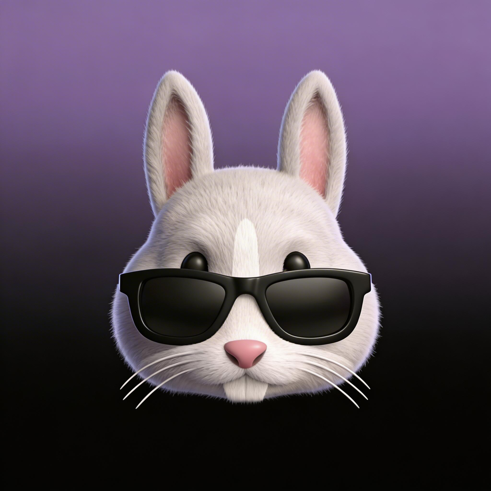

👤 个人概述
AI软件工程师，深耕智能算法、深度学习、信号处理与通信领域。
长期从事模型研发、系统方案设计、工程化落地工作，注重理论与实践结合，追求稳定、高效、轻量化的技术实现。
日常沉淀技术笔记、工具开发、影像记录，整理个人知识体系。
💻 技术方向
深度学习
人工智能
信号增强
AIGC应用开发
SDR软件无线电
Vibe Coding
🌐 本站介绍
本网站为个人轻量化静态站点，基于GitHub Pages搭建，采用苹果风简约毛玻璃设计，支持多主题切换。
集成个人技术博客、影像相册、实用工具箱、每日资讯等模块，纯前端轻量化，访问流畅、免服务依赖。